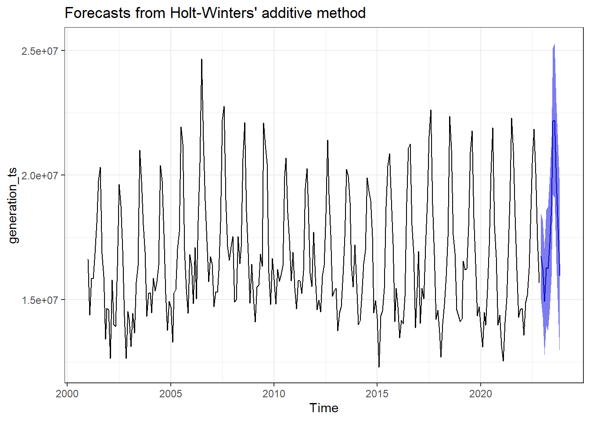

# reading the dataset for total energy generation in the US per state and month
total_generation = readr::read_csv('../../data/total_generation.csv')# code required to personalize your exam (run only once)
my_seed2 = TeachingDemos::char2seed('fmegahed') #change to your unique id
first_state = unique(total_generation$state) |> sample(size = 1)
first_state = ifelse(first_state == 'DC', yes = 'OH', no = first_state) #new addition for this exam
# The subset of the total_generation dataset that you will be analyzing for your exam
my_generation = total_generation |>
# limiting the data to your first state
dplyr::filter(state == first_state)Exam 02 - Case Study Solution
1 Reading the Data
2 Basic Exploration of the Data
2.1 Line Chart
# create date column/variable
my_generation = my_generation |>
dplyr::mutate(
date = lubridate::ymd(paste(year, month, '01', sep = '-')),
month = as.factor(month) # primarily for plotting
)
my_generation |>
ggplot2::ggplot(ggplot2::aes(x = date, y = generation_megawatt_hrs, group = year)) +
ggplot2::geom_point(ggplot2::aes(color = month)) +
ggplot2::geom_line() +
ggplot2::scale_color_brewer(palette = 'Paired') +
ggplot2::theme_classic() +
ggplot2::theme(legend.position = 'none') -> line_plot
plotly::ggplotly(line_plot)2.2 Seasonal Chart
my_generation |>
dplyr::filter(year > 2010) |>
ggplot2::ggplot(ggplot2::aes(x = month, y = generation_megawatt_hrs, group = year, color = as.factor(year))) +
ggplot2::geom_point() +
ggplot2::geom_line() +
ggplot2::scale_color_brewer(palette = 'Paired') +
ggplot2::theme_classic() +
ggplot2::theme(legend.position = 'none') -> seasonal_plot
plotly::ggplotly(seasonal_plot)2.3 Monthly Averages
my_generation |>
dplyr::group_by(month) |>
dplyr::summarise(avg_gen_month = mean(generation_megawatt_hrs) |> scales::comma()) # A tibble: 12 × 2
month avg_gen_month
<fct> <chr>
1 1 15,206,576
2 2 13,832,705
3 3 15,174,380
4 4 15,118,365
5 5 16,126,118
6 6 17,564,466
7 7 20,886,938
8 8 20,958,597
9 9 18,447,082
10 10 16,577,720
11 11 14,643,615
12 12 15,658,667 2.4 Yearly Averages
my_generation |>
dplyr::group_by(year) |>
dplyr::summarise(avg_gen_yr = mean(generation_megawatt_hrs) |> scales::comma()) |>
print(n = 23)# A tibble: 22 × 2
year avg_gen_yr
<dbl> <chr>
1 2001 16,549,673
2 2002 15,350,836
3 2003 16,065,712
4 2004 16,231,696
5 2005 16,691,068
6 2006 18,066,557
7 2007 17,570,632
8 2008 17,332,022
9 2009 17,064,678
10 2010 17,010,466
11 2011 16,733,737
12 2012 16,626,547
13 2013 16,673,093
14 2014 16,475,395
15 2015 16,391,988
16 2016 16,413,601
17 2017 17,178,877
18 2018 16,288,803
19 2019 16,815,350
20 2020 16,089,578
21 2021 16,430,576
22 2022 17,093,2483 Types of Seasonality and Linear Trends
From my yearly average, it does not seem that the generation for CA is increasing over the study period. Let us focus on the type of seasonality.
generation_ts = ts(my_generation$generation_megawatt_hrs, start = c(2001,1), frequency = 12)
hw_add = forecast::hw(generation_ts, seasonal = 'additive')
hw_mult = forecast::hw(generation_ts, seasonal = 'multiplicative')
hw_results = rbind(forecast::accuracy(hw_add), forecast::accuracy(hw_mult))
row.names(hw_results) = c('additive', 'multiplicative')
hw_results ME RMSE MAE MPE MAPE MASE
additive -54466.40 846368.9 676549.8 -0.5080056 4.021103 0.7508689
multiplicative -20172.04 892415.0 683980.5 -0.4036372 4.068082 0.7591158
ACF1
additive 0.07288373
multiplicative 0.29063874From my exploration, it seems that the additive model is slighlty better. Both choices are somewhat reasonable here due to the lack of trend.
4 Rolling Window
rolled_data =
rsample::rolling_origin(
data = my_generation,
initial = ceiling(0.95*nrow(my_generation)), # for quick analysis
assess = 12 # we want to predict one year ahead
)
rolled_data = rolled_data |>
dplyr::mutate(
# extract your training data
train_data = purrr::map(.x = splits, .f = rsample::analysis),
# extract my training dates and response of interest
train_dates = purrr::map(.x = train_data, .f = magrittr::extract2, 'date'),
train_resp = purrr::map(.x = train_data, .f = magrittr::extract2, 'generation_megawatt_hrs'),
# extract our test/assessment/evaluation data
test_data = purrr::map(.x = splits, .f = rsample::assessment),
# NOTE
# now test_dates and test_response are vectors not a single value
test_dates = purrr::map(.x = test_data, .f = magrittr::extract2, 'date'),
test_resp = purrr::map(.x = test_data, .f = magrittr::extract2, 'generation_megawatt_hrs')
)
results_df = rolled_data |>
dplyr::select(-c(splits, train_data, test_data))
# function for snaive forecast, convert vector to a ts and then forecast
snaive_fun = function(x){
x_ts = ts(data = x, start = c(2001, 1), frequency = 12)
snaive_fct = forecast::snaive(y = x_ts, h = 12) |> magrittr::extract2('mean')
return(snaive_fct)
}
# function for hw forecast, convert vector to a ts and then forecast
# testing the function with x = results_df$train_resp[[1]]
hw_fun = function(x){
x_train = x[1:ceiling(0.8*length(x))]
x_ts = ts(data = x_train, start = c(2001, 1), frequency = 12)
hw_model1 = forecast::hw(y = x_ts, h = 12, initial = 'simple')
opt_alpha = hw_model1$model$par['alpha']
opt_beta = hw_model1$model$par['beta']
opt_gamma = hw_model1$model$par['gamma']
x_all_ts = ts(data = x, start = c(2001, 1), frequency = 12)
hw_fct = forecast::hw(
y = x_all_ts, h = 12,
alpha = opt_alpha, beta = opt_beta, gamma = opt_gamma) |>
magrittr::extract2('mean')
return(hw_fct)
}
results_df = results_df |>
dplyr::mutate(
snaive_fct = purrr::map(.x = train_resp, .f = snaive_fun),
hw_fct = purrr::map(.x = train_resp, .f = hw_fun)
)
results_df = results_df |>
dplyr::mutate(
mape_snaive = purrr::map2(.x = snaive_fct, .y = test_resp, .f = forecast::accuracy) |>
purrr::map_dbl(.f = magrittr::extract2, c(5)),
mape_hw = purrr::map2(.x = hw_fct, .y = test_resp, .f = forecast::accuracy) |>
purrr::map_dbl(.f = magrittr::extract2, c(5))
)
avg_mape_snaive = mean(results_df$mape_snaive)
round(avg_mape_snaive, digits = 2) [1] 5.6[1] 3.035 Predictions for the Next 12 Months

forecast::hw(y = generation_ts, h = 12, level = 95) Point Forecast Lo 95 Hi 95
Dec 2022 16738799 15027061 18450536
Jan 2023 16244257 14308702 18179812
Feb 2023 14933036 12796480 17069591
Mar 2023 16285322 13964644 18605999
Apr 2023 16243779 13752115 18735444
May 2023 17268956 14616895 19921016
Jun 2023 18726254 15922571 21529937
Jul 2023 22152267 19204379 25100154
Aug 2023 22194112 19108398 25279825
Sep 2023 19677263 16459280 22895245
Oct 2023 17875978 14530624 21221331
Nov 2023 15959080 12490714 19427446